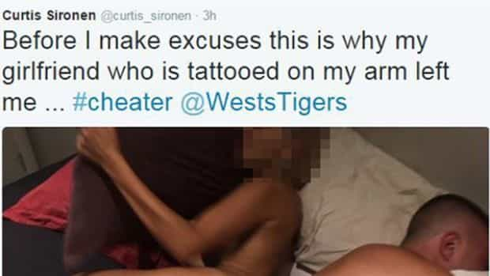

< < < Back
Why Are Only Men Punished In “Revenge Porn” Cases? – Return Of Kings
Rugby league player Curtis Sironen is not someone whose name means that much to me. But he has become embroiled in a bitter controversy, apparently having been found in bed with a woman who wasn’t his girlfriend. His Twitter account was commandeered and a photo of what looks to be Sironen and his blonde conquest, naked from behind, was published there. Other changes were made to the profile, including a description reading “Professional cheater living the life.”
The most telling suggestion that Sironen’s now ex-girlfriend, Patricia Hadjia, is responsible for the revenge porn act against the blonde is this tweet written by someone from his account:

Across various Facebook pages, including the one for Sydney’s Daily Telegraph, most commenters are expressing merriment or feelings of schadenfreude against Sironen. Others have questioned why he was stupid enough to tattoo his girlfriend’s name on himself. Although I agree Sironen’s choice of ink was a catatonic one, few have turned the tables and suggested that the person sharing the photo, most likely Hadjia, has broken the law.
One of those who has, thankfully, is Herald-Sun columnist Wendy Tuohy. She makes the terribly cogent point that as the perennial do-gooders pillory Sironen for being a bad role model, many less people will emphasize the criminal act of whoever plastered the photo across the internet, aided by the hundreds or thousands of zealous anti-cheating warriors sharing it.
Australian men have been prosecuted and jailed for sharing sexual photos without consent
Footballer BJ Leilua was charged by police and found guilty for a revenge porn-themed text message… to two people. What will Hadjia face if she is the instigator of this most recent revenge porn picture?
Sydneysider Ravshan Usmanov was jailed for six months in 2012 for sharing nude photos of his ex-girlfriend online. Interestingly, he was charged under general criminal provisions related to using a carriage service (telecommunications devices and the internet) to offend, harass, or menace.
If Hadjia did indeed disseminate the naked photo of her boyfriend’s sexual partner, she should be facing a comparable, if not higher penalty. Unlike in the Usmanov case, the person circulating the photo of the blonde has punished a participant who isn’t one half of the couple. It may not be nice to sleep with someone else’s partner, but the unknown woman has a) no obligation of fidelity owed to Hadjia and b) we do not even know if she knew Sironen was in a relationship.
In the sport of rugby league, the issue of so-called revenge porn is not a new one. BJ Leilua, admittedly not the most intelligent person to play the game, was spared a formal conviction but found himself vigorously prosecuted for sending a naked photo of his ex-girlfriend to her brother and best friend.
Leilua’s act, irrespective of the embarrassment to the girl, was not a public advertisement for all to see. On the other hand, Hadjia or someone else took that much larger step of “let’s let the whole world see.”
What if Curtis Sironen had been naked?
Patricia Hadjia and Curtis Sironen when a couple.
If a woman purportedly posting revenge porn of her boyfriend’s mistress isn’t enough to warrant mass condemnation, as happens when a male shares similar photos of a female, the prospects of any measurable sympathy for a man finding his nude pictures published are beyond grim. Maybe Wendy Tuohy of the Herald-Sun would have been uninterested in the story if the person photographed naked had been the male footballer and not the blonde.
Such counterfactuals are by no means outlandish in a world where study after study demonstrates that female offenders get less severe sentences for the same crime and are less likely to be arrested, charged, prosecuted, and found guilty in the first place.
Modern feminist rhetoric, from university dorm “rape culture” to “cyber violence” summits sponsored by the UN, cannot cope with the idea that women should be regularly held to account for their over-the-top reactions. Yet feminists demand that men should always be excoriated (often over allegations that cannot be proven). The same goes for victimhood, which requires a steady stream of offended females, separated by a very occasional legitimate male victim (only for the purposes of declaring how equality-minded they are).
Patricia Hadjia, if she’s the one behind the photo, will probably only find that her Instagram account is more popular and that she can make more money by parading herself both there and elsewhere.
Scorned or just angry women will always have excuses made for them
Ravshan Usmanov was jailed for posting nude pictures of his ex-girlfriend online. Will Hadjia be prosecuted, let alone imprisoned, if she’s behind the naked blonde photograph?
The excuses are so rampant nowadays that virtual silence is the response to many an allegation of appalling female behavior. People may be talking about the photograph but it’s not for any reason you would find if a man were holding the camera. From glassing men who text other girls to the staggering number of instances of female domestic violence, women who lose control are simply presumed to have been wronged to such an extent that what they do is either completely justified or mitigated spectacularly by the circumstances.
So don’t be shocked if Patricia Hadjia or whoever else did this walk away from the situation with zero negative consequences and a lot of positive ones.
Read More: Why Feminism Is To Blame For Revenge Porn